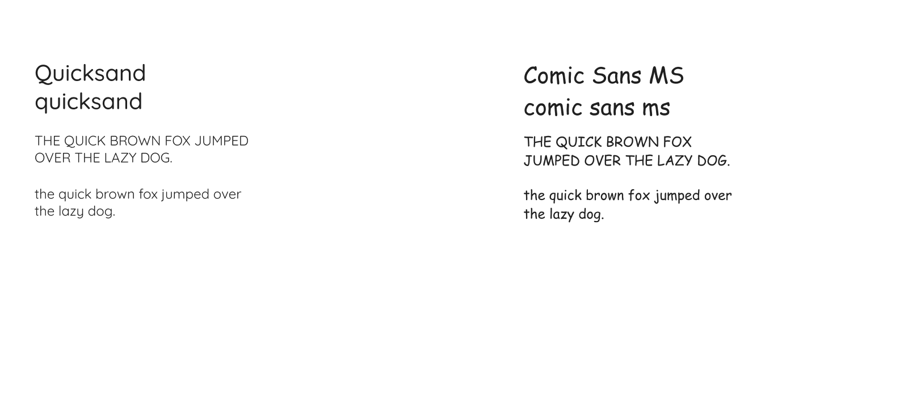
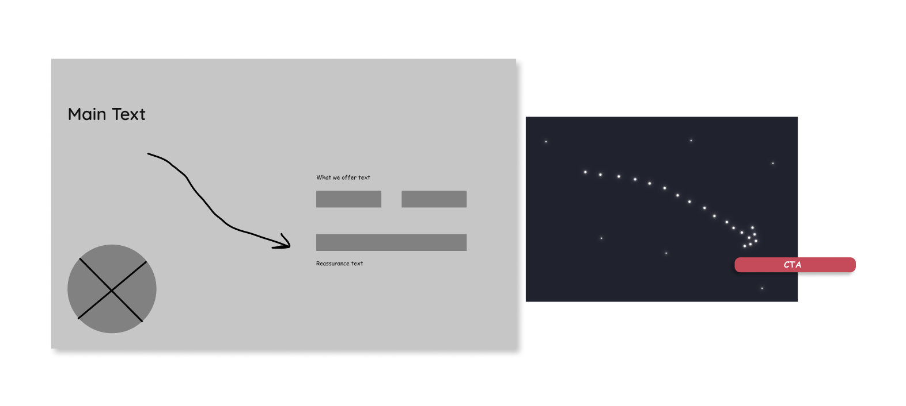

Design
| Color Psychology
I decided to use three colors for my modal design. I selected blue because it symbolizes trust and reliability. Aside from this, blue was a great color to symbolize space. The second color I used was a variation of red called bittersweet shimmer because it not only draws the user's attention but, symbolizes energy. The last color I decided to incorporate was orange because it symbolizes exploration.
| Font Style
I chose to incorporate two fonts in my design. The first font was Quicksand because it is a san-serif font which makes content easier to read. The second font I selected was Comic Sans MS. I decided to use this font because it is a san-serif, and the overall styling of the letters convey a sense of adventure.
| Iteration #1
I wanted to incorporate a vector drawing that would direct the users attention to the written content on the modal.
| Iteration #1 Wireframe
I started to create a wireframe to visualize how I wanted to layout the information. I decided to implement Gestalt Principles (common fate, similarity, continuity and proximity) by designing an arrow to symbolize a constellation that would point users to the call-to-action sign up button.
| Microcopy Justification
| Iteration #1 High Fidelity
This is the first iteration of the newsletter modal.

| Feedback
The key takeaways from the feedback I received were to: